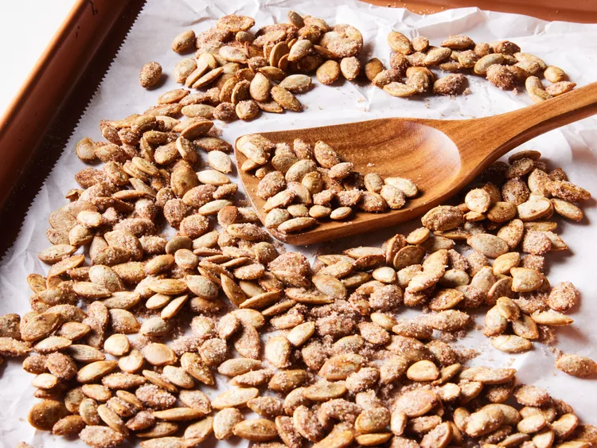

Cinnamon Sugar Pumpkin Seeds

Recipe:
Toasted cinnamon pumpkin seeds make a great snack, especially around
Halloween when you can use fresh pumpkin seeds.
Ingredients:
- 1 ½ cups pumpkin seeds
- 3 tablespoons butter, melted
- 1 teaspoon ground cinnamon
- ¼ teaspoon salt
- 2 tablespoons white sugar
Steps:
- Gather the ingredients. Preheat the oven to 300 degrees F (150 degrees C). Line a baking sheet with parchment paper.
- Place pumpkin seeds into a large bowl. Mix butter, cinnamon, and salt together in a small bowl; pour over seeds and toss until evenly coated. Spread seeds in a single layer on the prepared baking sheet.
- Bake in the preheated oven, stirring occasionally, until seeds are light golden brown, about 40 minutes. Remove from the oven; sprinkle sugar over warm seeds and stir until evenly coated.
Enjoy!
Home